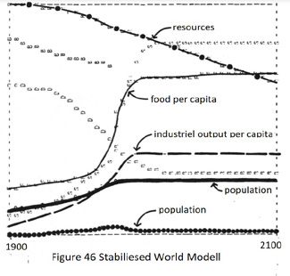

An extract of the Report for THE CLUB OF ROME'S Project on the
Predicament of Mankind
was written more than 50 Years ago
The following is an extraction of the book A
IN APRIL 1968, a group of thirty individuals from ten countries-scientists, educators, economists, humanists, industrialists, and national and international civil servants-gathered in the Accademia dei Lincei in Rome. They met at the instigation of Dr. Aurelio Peccei, an Italian industrial manager, economist, and man of vision, to discuss a subject of staggering scope-the present and future predicament of man.
Are the implications of these global trends actually so threatening that their resolution should take precedence over local, short-term concerns ? Is it true, as U Thant suggested, that there remains less than a decade to bring these trends under control ? If they are not brought under control, what will the consequences be ? What methods does mankind have for solving global problems, and what will be the results and the costs of employing each of them? These are the questions that we have been investigating in the first phase of The Club of Rome's Project on the Predicament of Mankind. Our concerns thus fall in the upper righthand corner of the space-time graph.
Page 23
Our conclusions are:
1. If the present growth trends in world population, industrialization, pollution, food production, and resource depletion continue unchanged, the limits to growth on this planet will be reached sometime within the next one hundred years. The most probable result will be a rather sudden and uncontrollable decline in both population and industrial capacity.
2. It is possible to alter these growth trends and to establish a condition of ecological and economic stability that is sustainable far into the future. The state of global equilibrium could be designed so that the basic material needs of each person on earth are satisfied and each person has an equal opportunity to realize his individual human potential.
3. If the world's people decide to strive for this second outcome rather than the first, the sooner they begin working to attain it, the greater will be their chances of success. These conclusions are so far-reaching and raise so many questions for further study that we are quite frankly overwhelmed by the enormity of the job that must be done. We hope that this book will serve to interest other people, in many fields of study and in many countries of the world, to raise the space and time horizons of their concerns and to join us in understanding and preparing for a period of great transitionthe transition from growth to global equilibrium
Page 38
WORLD ECONOMIC GROWTH
A second quantity that has been increasing in the world even faster than human population is industrial output. Figure 6 38 THE NATURE OF EXPONENTIAL GROWTH shows the expansion of world industrial production since 1930, with 1963 production as the base of reference. The average growth rate from 1963 to 1968 was 7 percent per year, or 5 percent per year on a per capita basis. What is the positive feedback loop that accounts for exponential growth of industrial output? The dynamic structure, diagramed below, is actually very similar to the one we have already described for the population system<
Page 69
POLLUTION Many people .. . are concluding on the basis of mounting and reasonably objective evidence that the length of life of the biosphere as an inhabitable region for organisms is to be measured in decades rather than in hundreds of millions of years. This is entirely the fault of our own species
Page 88
We have discussed food, nonrenewable resources, and pollution absorption as separate factors necessary for the growth and maintenance of population and industry. We have looked at the rate of growth in the demand for each of these factors and at the possible upper limits to the supply. By making simple extrapolations of the demand growth curves, we have attempted to estimate, roughly, how much longer growth of each of these factors might continue at its present rate of increase. Our conclusion from these extrapolations is one that many perceptive people have already realized-that the short doubling times of many of man's activities, combined with the immense quantities being doubled, will bring us close to the limits to growth of those activities surprisingly soon.
Page 129
A lthough the history of human effort contains numerous incidents of mankind's failure to live within physical limits, it is success in overcoming limits that forms the cultural tradition of many dominant people in today's world. Over the past three hundred years, mankind has compiled an impressive record of pushing back the apparent limits to population and economic growth by a series of spectacular technological advances. Since the recent history of a large part of human society has been so continuously successful, it is quite natural that many people expect technological breakthroughs to go on raising physical ceilings indefinitely. These people speak about the future with resounding technological optimism.
Page 156

We have seen that positive feedback loops operating without any constraints generate exponential growth. In the world system two positive feedback loops are dominant now, producing exponential growth of population and of industrial capital.
In any finite system there must be constraints that can act to stop exponential growth. These constraints are negative feedback loops. The negative loops become stronger and stronger as growth approaches the ultimate limit, or carrying capacity, of the system's environment. Finally the negative loops balance or dominate the positive ones, and growth comes to an end. In the world system the negative feedback loops involve such processes as pollution of the environment, depletion of nonrenewable resources, and famine.
The delays inherent in the action of these negative loops tend to allow population and capital to overshoot their ultimately sustainable levels. The period of overshoot is wasteful of resources. It generally decreases the carrying capacity of the environment as well, intensifying the eventual decline in population and capital.
The growth-stopping pressures from negative feedback loops are already being felt in many parts of human society. The major societal responses to these pressures have been directed at the negative feedback loops themselves. Technological solutions, such as those discussed in chapter IV, have been devised to weaken the loops or to disguise the pressures they generate so that growth can continue. Such means may have some shortterm effect in relieving pressures caused by growth, but in the long run they do nothing to prevent the overshoot and subsequent collapse of the system.
Another response to the problems created by growth would
be to weaken the posititJ~ feedback loops that are generating
the growth. Such a solution has almost never been acknowledged as legitimate by any modern society, and it has certainly
never been effectively carried out. What kinds of policies would
such a solution involve? What sort of world would result?
There is almost no historical precedent for such an approach,
and thus there is no alternative but to discuss it in terms of
models-either mental models or formal, written models. How
will the world model behave if we include in it some policy
to control growth deliberately? Will such a policy change
generate a "better" behavior mode?
Complete Book text Limit To Growth
Glasgow. latest news <14 Nov 2021>Final agreement unclear as climate talks were not successful.
Final wording on COP26 agreement remains up in the air !
Proverbs - True-False:
- There is nothing else we can do otherwise we had already done it
- Only when we are up to our necks in the shit then something will be done